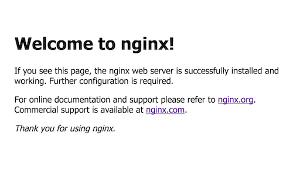

知識庫
不用擔心伺服器太難使用，這裡一步一步的教您如何使用伺服器，善用Ctrl + F找尋您要的關鍵字吧!
目錄
後台指令、檔案操控教學 - 點擊此閱讀
網站架設教學 - 點擊此閱讀
Minecraft伺服器架設教學 - 點擊此閱讀
網頁伺服器架設軟體
常見的網頁伺服器架設軟體有Apache及Nginx，作者我是推薦Nginx，選擇原因不在這裡多做陳述，想深入瞭解的話請看此文章：Apache vs Nginx該選哪個(中文文章)
Nginx安裝教學
1. 使用SSH連線至伺服器後台，登入後輸入下載Nginx指令
sudo apt install nginx
給新手的小幫助：sudo可以想成進入最高管理權限的按鈕(最高管理權限以下稱之為root)， 只有root才能對系統做完整的更動，像是下載資料、帳戶更動等具有一定風險性的操作。因此， 如果尚未進入root模式就打算下載資料，需要在開頭加上sudo，然後系統會要求輸入root密碼(密碼不會顯示，輸入完後按下Enter即可)， 才可進行資料下載喔！
2. 下載與安裝完畢後，開啟伺服器請輸入：sudo systemctl start nginx
3. 此時打開電腦或手機等裝置的瀏覽器，輸入伺服器連線位置(IP)即可瀏覽網站！
如果架設成功且連線位置(IP)輸入正確的話，你會在瀏覽器看見以上畫面。
更改網站內容
1. 移動至網站內容的存放路徑cd /var/www/html
2. index.html代表網站的首頁，若要更改網站首頁，最簡單的方式就是將檔名更改為index.html
3. 將前端檔案(HTML, CSS, JavaScript, 照片, 影片等)上傳至此(使用FTP或SFTP)，並重啟伺服器即可！
給新手的小幫助：不知道前端檔案(HTML, CSS, JavaScript)是什麼？ 簡單來講，就是網頁的程式碼(不過HTML算是標籤語言，不是程式語言)， 這3個語言(HTML, CSS, JavaScript)，一個是架構、一個是美化、一個是增加一些動作&動畫， 如果想深入瞭解的話請看此文章：網頁前端3語言
4. 重新啟動網頁伺服器sudo systemctl restart nginx